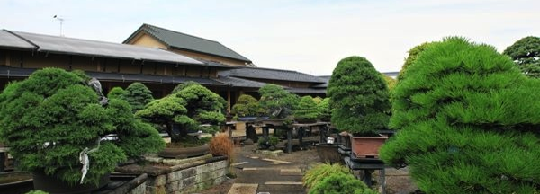
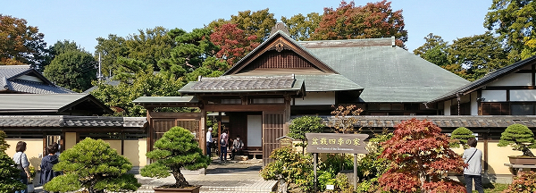
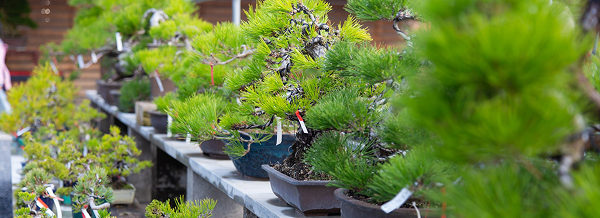
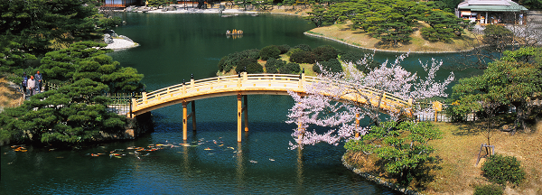
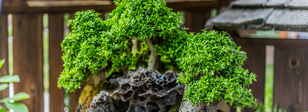
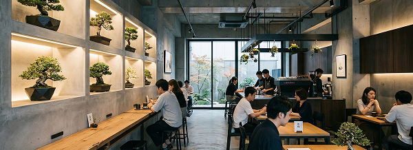

盆栽の聖地、さいたま市大宮
盆栽を語るうえで外せないのが、埼玉県さいたま市の大宮地区。
関東大震災を機に東京の盆栽職人たちが、盆栽育成に適した土地を求めて大宮地区に移住したことから始まり、以降盆栽の聖地と呼ばれている。
街全体が盆栽の村になっており、盆栽をテーマにしたカフェや美術館が点在。盆栽村の中には無料で自由に見学できる盆栽園もあり、気軽に盆栽を楽しむことができる。
BONSAI SPOTS

さいたま市大宮盆栽美術館
公立として世界初の盆栽に特化した美術館。さいたま市の伝統産業にも指定されている盆栽の文化発信のため、盆栽だけでなく鉢や水石、盆栽が描かれた絵画作品など、盆栽にまつわるさまざまな展示をしている。
さいたま市大宮盆栽美術館 公式サイトopen_in_new
盆栽四季の家
東角井光臣家（武蔵一宮氷川神社宮司）の邸宅の一部を移築復元して作られた和風建築で、盆栽村周辺を観光した人々が休憩する憩いの場。
松盆栽の生産量日本一、香川県高松市
国内の松盆栽のシェア8割を占める、日本最大の盆栽産地である香川県高松市。
江戸時代後期から黒松を使用した盆栽栽培が始まり、現在に至るまで多くの盆栽園が集まっている。
近年では観光としての盆栽に力を入れており、香川県がうどんだけでないアピールに、盆栽イベントなども開催されている。
BONSAI SPOTS

せとうち盆栽庭園美術館
盆栽の郷と呼ばれる高松市国分寺町に開館された盆栽美術館。高松市内の盆栽観光のランドマークにと設立され、庭園のような広々とした空間に優雅な盆栽が並ぶ。
せとうち盆栽庭園美術館 公式サイトopen_in_new
特別名勝 栗林公園
東京ドーム約3.5個分もの広さを誇る文化財庭園。盆栽ではないが、庭園には約1000本もの手入れ松があり、樹齢300年と言われる「鶴亀松」や、江戸時代将軍から賜ったという「根上五葉松」の風格は、盆栽に通じるものがある。
東京都心で味わう、モダン盆栽
東京では古くからの盆栽品評会が開催されるだけでなく、近年ではデザイン性の高い盆栽の展示や、体験重視のスポットが集まっている。
盆栽をテーマにしたモダンなカフェや、実際の盆栽の手入れを体験するワークショップなど。
都会の喧騒の中で、静けさと力強さを併せ持った盆栽の精神が再評価されている。
BONSAI SPOTS

春花園BONSAI美術館
日本を代表する盆栽作家・小林國雄氏が江戸川区に開館した盆栽美術館。建物や庭の随所に日本情緒が感じられ、美術館全体で四季折々の美しさを楽しむことができる。館内では盆栽体験だけでなく、茶の湯体験や着付け体験もできる。
春花園BONSAI美術館 公式サイトopen_in_new
BONSAI COFFEE
盆栽好きのオーナーが始めた、盆栽を眺めながらゆっくりとコーヒーを味わえる渋谷区の人気カフェ。コンクリート調の無機質な店内に盆栽の緑が映え、時代に合わせたモダンな盆栽体験ができる。自家製チーズケーキが人気。
日本各地でBONSAIに出会う
北海道・東北
- 北海道札幌市 掌 TANAGOKOROopen_in_new
- 秋田県横手市 十文字神社open_in_new
- 山形県寒河江市 最上川ふるさと総合公園open_in_new
関東
- 東京都立川市 国営昭和記念公園 盆栽苑open_in_new
- 神奈川県湯河原町 樹翠菴open_in_new
- 山形県寒河江市 最上川ふるさと総合公園open_in_new
中部
- 静岡県浜松市 盆栽いくまopen_in_new
- 愛知県名古屋市 文化のみち橦木館open_in_new
- 岐阜県高山市 高山陣屋open_in_new
近畿
- 京都府京都市 大徳寺 芳春院 盆栽庭園
- 滋賀県長浜市 慶雲館 長浜盆梅展open_in_new
- 大阪府大阪市 大阪城公園open_in_new
中国・四国
- 島根県安来市 足立美術館open_in_new
- 岡山県岡山市 後楽園open_in_new
- 広島県広島市 広島市植物公園open_in_new
九州・沖縄
- 福岡県福岡市 福岡市植物園open_in_new
- 鹿児島県鹿児島市 仙巌園open_in_new
- 沖縄県名護市 ネオパークオキナワ open_in_new